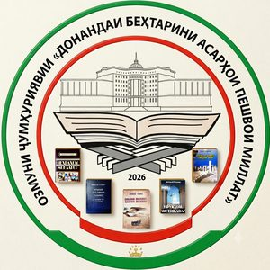

← Бозгашт
«Донандаи беҳтарини асарҳои Пешвои миллат» · 2026

НИЗОМНОМАИ
Озмуни ҷумҳуриявии «Донандаи беҳтарини асарҳои Пешвои миллат»
Байни донишҷӯёни муассисаҳои таҳсилоти миёна ва олии касбӣ2026 , №___
🇹🇯 Ба ифтихори 35-солагии Истиқлолияти давлатии Ҷумҳурии Тоҷикистон
1 МУҚАРРАРОТИ УМУМӢ1.1. Озмуни ҷумҳуриявии «Донандаи беҳтарини асарҳои Пешвои миллат» (минбаъд — Озмун ) дар асоси Амри Президенти Ҷумҳурии Тоҷикистон аз 2 январи соли 2026, №АП-952 дар бораи тасдиқи Ҷадвали баргузории ҷашну солгардҳо, фестивалу намоишҳо, иду озмунҳои фарҳангию маърифатӣ ва анъанаю ҳунарҳои мардумӣ дар Ҷумҳурии Тоҷикистон барои соли 2026 ва ба ифтихори 35-солагии Истиқлолияти давлатии Ҷумҳурии Тоҷикистон баргузор карда мешавад.
1.2. Озмун бо мақсади арҷгузорӣ ба таърихи пурифтихори миллати тоҷик, омӯзиши амиқу ҳамаҷонибаи корнамоиҳои мондагор ва фаъолияти шоистаи Асосгузори сулҳу ваҳдати миллӣ — Пешвои миллат, Президенти Ҷумҳурии Тоҷикистон муҳтарам Эмомалӣ Раҳмон дар роҳи наҷоти давлат, таҳкими ваҳдати миллӣ, эъмори давлати демократӣ, ҳуқуқбунёд, дунявӣ ва ягонаи Тоҷикистон дар шароити нави таърихӣ, дарёфти чеҳраҳои нави суханвару сухандон, арҷ гузоштан ба арзишҳои миллию фарҳангӣ, инкишофи қобилияти эҷодӣ, таҳкими эҳсоси худогоҳию худшиносӣ, ифтихори миллӣ, тақвияти қобилияти кордониву роҳбарӣ, омӯзиши ҳамаҷонибаи Мактаби давлатдории Эмомалӣ Раҳмон миёни қишри ҷавони аҳолии кишвар, бахусус донишҷӯёни муассисаҳои таҳсилоти миёна ва олии касбӣ доир мегардад.
1.3. Озмун барои рӯй овардан ба ҳувияти миллӣ, зиракии сиёсӣ, худшиносию меҳанпарастӣ ва дар маҷмуъ эҳтирому шукргузорӣ аз истиқлоли сиёсӣ ва ба ин васила ҷалби ҷовонон ба омӯзиши осори пурғановати Пешвои миллат нақши созгор хоҳад дошт.
1.4. Иштирокчиёни Озмун — донишҷӯёни муассисаҳои таҳсилоти миёнаи касбӣ ва олии касбӣ (бакалавр, магистр) мебошанд.
↑ Ба мундариҷа
2 САРПАРАСТ ВА МАСЪУЛОНИ ОЗМУН2.1. Сарпарасти Озмун — Муассисаи давлатии «Китобхонаи миллӣ» -и Дастгоҳи иҷроияи Президенти Ҷумҳурии Тоҷикистон (минбаъд — Китобхонаи миллӣ ).
2.2. Масъулони баргузории Озмун: Китобхонаи миллӣ, вазоратҳои маориф ва илм, фарҳанг, кумитаҳо оид ба таҳсилоти ибтидоӣ ва миёнаи касбӣ, телевизион ва радио, кор бо ҷавонон ва варзиш, Академияи миллии илмҳои Тоҷикистон, Иттифоқи нависандагони Тоҷикистон ва Академияи идоракунии давлатии назди Президенти Ҷумҳурии Тоҷикистон.
2.3. Вазоратҳои маориф ва илм, фарҳанг, кумитаҳо, Академияи миллии илмҳо ва Иттифоқи нависандагони Тоҷикистон дар тартиб ҷалби иштирокчиён ва таъмини ҳузури ҳайати ҳакамон дар чорабиниҳои баргузории Озмун иштирок мекунанд.
2.4. Ректорон (директорон)-и муассисаҳои таҳсилоти миёна, олии касбӣ ва роҳбарони мақомоти иҷроияи ҳокимияти давлатии шаҳру ноҳияҳо ҷиҳати дар сатҳи баланд ташкил ва баргузор кардани даври якуми Озмун масъул мебошанд.
↑ Ба мундариҷа
3 КОМИССИЯИ ОЗМУН3.1. Барои гузаронидани Озмун Комиссияи Озмуни ҷумҳуриявӣ ташкил дода шуда, ҳайати он аз ҷониби директори Китобхонаи миллӣ тасдиқ карда мешавад.
3.2. Комиссия аз раис, муовин, аъзо ва котибот иборат мебошад.
3.3. Ваколатҳои Комиссияи Озмун:
таҳияи ҷадвали баргузории Озмун ва назорати он;
тасдиқи тартиб, талабот ва тавзеҳот оид ба Озмун;
пешниҳоди ҳайати ҳакамон барои даври дуюми Озмун;
бо ширкати ҳайати ҳакамон гузаронидани семинари машваратӣ;
назорати риояи талабот ва пешниҳоди тавсияҳо ба довталабон;
омӯзиш ва тавсияи ҳуҷҷатҳои иштирокдорон ба даври ниҳоӣ;
баррасии пешниҳодҳои ҳайати ҳакамон ва арзу шикоятҳои иштирокдорон;
тасдиқ ва эълони натиҷаи хулосаи ҳайати ҳакамони даври дуюм.
↑ Ба мундариҷа
4 ТАРТИБИ БАРГУЗОРИИ ОЗМУН4.1. Озмун аз ду давр иборат буда, аз моҳи май то октябри соли 2026 ба таври зайл ташкил ва гузаронида мешавад:
Даври якум — моҳи май дар муассисаҳои таҳсилоти миёна ва олии касбӣ;Даври дуюм — ҳафтаи якуми моҳи октябр барои ғолибони ҷойҳои якум, дуюм ва сеюми даври якум — дар Китобхонаи миллӣ.
4.2. Протоколи ҷамъбасти даври якум ба Комиссияи Озмун бо тасдиқи ректорон (директорон) ва имзои раисони ҳакамони даври якум пешниҳод мешавад.
4.3. Шумораи ғолибони даври якум, ки ба даври дуюм пешниҳод мешаванд, набояд аз 3 нафар зиёд бошад.
4.4. Иштирокдорон новобаста аз зодгоҳ ва маҳалли зисташон аз номи муассисаи таълимӣ , ки дар он донишҷӯ мебошанд, баромад мекунанд.
4.5. Ҷараёни баргузории даври якум тавассути шабакаҳои иҷтимоии интернетӣ ва телевизиону радиоҳои маҳаллӣ, даври дуюм — тавассути шабакаҳои телевизион ва радиои ҷумҳуриявӣ инъикос карда мешавад.
4.6. Муҳлати пешниҳоди ҳуҷҷатҳои ғолибони даври якум барои иштирок дар даври дуюм ба Комиссияи Озмун — то 14 сентябри соли 2026 .
4.7. Дар даври дуюми Озмун ғолибони даври якум ба ду гурӯҳ ҷудо гардида, иштирок менамоянд:
Гурӯҳи якум — миёни донишҷӯёни муассисаҳои таҳсилоти миёнаи касбӣ;Гурӯҳи дуюм — миёни донишҷӯёни муассисаҳои таҳсилоти олии касбӣ.
4.8. Китобхонаи миллӣ, вазоратҳои маориф ва илм, фарҳанг, кумитаҳо, Академияи миллии илмҳо, Иттифоқи нависандагони Тоҷикистон, Донишгоҳи миллии Тоҷикистон ва Академияи идоракунии давлатии назди Президенти Ҷумҳурии Тоҷикистон масъули гузаронидани маросими тантанавии супоридани ҷоизаҳо ба ғолибони Озмун мебошанд.
↑ Ба мундариҷа
5 ШАРТҲОИ ИШТИРОК ДАР ОЗМУН5.1. Дар Озмун донишҷӯёни муассисаҳои таҳсилоти миёна ва олии касбӣ (магистр ва бакалавр) иштирок карда метавонанд.
5.2. Шартҳои ташкил ва баргузории Озмун аз ҷониби Комиссияи Озмун назорат карда мешавад.
5.3. Дар вақти холгузорӣ ба савияи дониш ва баёни мантиқии муҳтавои асарҳои Пешвои миллат ва амалӣ гардидаи рӯйдодҳои фарҳангии миллӣ, ки бевосита бо ибтикори Президенти Ҷумҳурии Тоҷикистон муҳтарам Эмомалӣ Раҳмон ба вуҷуд пайвастаанд, бартарӣ дода мешавад.
5.4. Озмун бо забонҳои тоҷикӣ ва русӣ баргузор мегардад.
5.5. Дар даври дуюм иштирокдорон маълумотномаи худро бо тасдиқи роҳбарияти муассиса ва нусхаи протоколи даври якум ба Комиссияи Озмун ба таври хаттӣ пешниҳод менамоянд (ҳуҷҷатҳои мазкур дар ду нусха ).
5.6. Раёсати муассисаҳои таҳсилоти миёна ва олии касбӣ як нафарро котиби масъул -и даври якуми Озмун таъйин менамоянд. Котиби масъул вақт ва ҷойи баргузории Озмунро ба иштирокдорон хатман хабар медиҳад.
5.7. Ғолибони даври дуюми Озмун, ки сазовори ҷойҳои якум, дуюм ва сеюм мегарданд, то се соли оянда дар Озмуни «Донандаи беҳтарини асарҳои Пешвои миллат» ҳуқуқи иштирок карданро надоранд.
↑ Ба мундариҷа
6 ТАЛАБОТ БА ИШТИРОКДОРОНИ ОЗМУН6.1. Дониши азбарнамудаи иштирокдорони Озмун тибқи мазмуни асарҳои Пешвои миллат муайян карда мешавад, аз ҷумла:
донистани маълумоти муфассал доир ба асарҳои Пешвои миллат ;
донистани маълумот оид ба ҳаёт ва фаъолияти Пешвои миллат;
баёни порчаҳои муҳимми асарҳо, асосноккунии дастовардҳо, корнамоӣ ва ободкориҳои Пешвои миллат;
зикри нуктаҳои муҳим доир ба саҳми Пешвои муаззами миллат дар ҳалли масъалаҳои башарӣ — глобалии сайёра ;
донистани санадҳои муҳимми меъёрии ҳуқуқӣ оид ба мақоми Пешвои миллат, Президенти Ҷумҳурии Тоҷикистон ва Ҳукумати Ҷумҳурии Тоҷикистон;
донистани мероси таърихию фарҳангӣ ва моддиву маънавии халқи тоҷик;
донистани сарчашмаҳои таърихӣ ва асарҳои илмиву бадеӣ, ки дар асарҳои Пешвои миллат истифода шудаанд;
қобилияти суханварӣ, озодбаёнӣ ва ровигӣ .
↑ Ба мундариҷа
7 МЕЪЁРИ АРЗЁБИИ ҒОЛИБОНИ ОЗМУН7.1. Ҳайати ҳакамони Озмун ба савияи дониши сиёсию фарҳангии иштирокдорон аз рӯйи меъёрҳои зерин баҳо медиҳанд:
ба ҳар як довталаб барои муаррифии ҳаёту фаъолият, мактаби давлатдорӣ, пешниҳодҳои сатҳи ҷаҳонӣ ва китобҳои Пешвои миллат, инчунин асарҳои дигари таърихӣ — то 10 дақиқа вақт дода мешавад;
ҷадвали баҳогузорӣ — 10-хола :
10 хол — донистани ҳаёту фаъолият, хизматҳои шоиста ва корнамоиҳои Асосгузори сулҳу ваҳдати миллӣ — Пешвои миллат, Президенти Ҷумҳурии Тоҷикистон муҳтарам Эмомалӣ Раҳмон;8 хол — ҷавоби аз хуб болотар;6 хол — ҷавоби хуб;4 хол — ҷавоби аз миёна беҳтар;3 хол — ҷавоби миёна;барои ҷавоби ғайриқаноатбахш хол гузошта намешавад.
↑ Ба мундариҷа
8 ҲАЙАТИ ҲАКАМОН8.1. Ҳайати ҳакамони даври якуми Озмунро ректорон (директорон) -и муассисаҳои таҳсилоти миёна ва олии касбӣ бо санади дахлдор тасдиқ менамоянд.
8.2. Ҳайати ҳакамон амалҳои зеринро иҷро мекунанд:
саводу дониш ва маҳорату истеъдоди довталабонро натиҷагирӣ мекунанд;
холҳоро муқаррар карда, бо овоздиҳии кушода ғолибонро муайян менамоянд;
натиҷаи Озмунро дар протокол дарҷ карда, бо имзои аъзои ҳакамон тасдиқ менамоянд.
8.3. Ба ҳайати ҳакамон олимону адибон, роҳбарони китобхонаҳо ва омӯзгорон ворид мешаванд. Шумораи ҳайати ҳакамон набояд аз 5 нафар зиёд бошад.
8.4. Хулосаи ҳайати ҳакамони даври дуюм дар Комиссияи Озмун баррасӣ ва тасдиқ карда мешавад.
8.5. Комиссияи Озмун дар ҳолати ҷавобгӯ набудани хулосаи ҳайати ҳакамон ба талаботи Низомнома (ҳолатҳои истисноӣ ё иштибоҳҳои техникӣ) ҳуқуқи бекор кардани онро дорад .
↑ Ба мундариҷа
9 ТАЪМИНОТИ МОЛИЯВИИ ОЗМУН9.1. Хароҷоти даври якум, сафарбаркунии ғолибон ба даври дуюм ва будубоши онҳо дар шаҳри Душанбе аз суратҳисоби муассисаҳои таҳсилоти миёнаи касбӣ ва олии касбӣ ва дигар сарчашмаҳои маблағгузорӣ пардохт карда мешавад.
9.2. Ғолибони даври якум ва дуюми Озмун, инчунин иштирокдорони фаъоли он аз ҷониби Вазорати маориф ва илм ва муассисаҳои таҳсилоти миёна ва олии касбӣ ба таври моддиву маънавӣ ҳавасманд гардонида мешаванд.
9.3. Хароҷоти баргузории чорабинии даври дуюми Озмун аз суратҳисоби махсуси Китобхонаи миллӣ пардохт карда мешавад.
9.4. Ба ғолибон ва иштирокдорони фаъолии даври дуюми Озмун аз ҳисоби маблағҳои пешбинигардидаи Китобхонаи миллӣ, Вазорати маориф ва илм, Кумита оид ба таҳсилоти ибтидоӣ ва миёнаи касбӣ ва Кумитаи иттифоқи касабаи кормандони маориф ва илм ҷоиза ва мукофоти пулӣ дода мешавад.
9.5. Барои ҳавасмандгардонии ғолибони ҳар ду даври Озмун тибқи қонунгузории Ҷумҳурии Тоҷикистон ҷалби сарпарастон иҷозат дода мешавад.
↑ Ба мундариҷа
10 ТАРТИБИ ДАРЁФТИ ҶОЙИ ЯКУМ10.1. Ҷойи якум ба иштирокдоре дода мешавад, ки беш аз 90% асарҳои Асосгузори сулҳу ваҳдати миллӣ — Пешвои миллат, Президенти Ҷумҳурии Тоҷикистон муҳтарам Эмомалӣ Раҳмонро мутолиа ва ҳифз намудааст .
↑ Ба мундариҷа
11 ИМТИЁЗҲО11.1. Ғолибони даври дуюм (ҷойҳои 1, 2, 3 ) баъди хатми зинаи бакалавриати муассисаҳои таҳсилоти олии касбӣ бе супоридани имтиҳон , бо тавсияномаи Вазорати маориф ва илми Ҷумҳурии Тоҷикистон барои идомаи таҳсил дар зинаи магистратураи Академияи идоракунии давлатии назди Президенти Ҷумҳурии Тоҷикистон қабул карда мешаванд.
11.2. Ғолибони даври дуюми Озмун тавассути барномаҳои телевизионӣ ва радиоӣ муаррифӣ гардида, ҳуқуқи иштирок дар чорабиниҳои маърифатию сиёсӣ ва гурӯҳҳои ташвиқотию тарғиботиро пайдо менамоянд.
11.3. Ғолибони даври ниҳоии Озмун бо корти Узви ифтихории «Китобхонаи миллӣ» , ки ҳуқуқи бемаҳдуди истифодабарӣ аз шӯъбаву бахшҳои МД «Китобхонаи миллӣ» дорад, қадрдонӣ карда мешаванд.
11.4. МД «Китобхонаи миллӣ»-и Дастгоҳи иҷроияи Президенти Ҷумҳурии Тоҷикистон протокол ва санадҳои ғолибони Озмунро дар асоси таҳияи тартиби махсус барои 5 сол нигоҳдорӣ намуда, сипас ба бойгонӣ месупорад.
↑ Ба мундариҷа
З1 ҲАЙАТИ КОМИССИЯИ ОЗМУН
Замимаи 1 ба Низомномаи Озмуни ҷумҳуриявии
Раёсати Комиссия:
Мудири бахши раёсати маориф, фарҳанг ва иттилооти Дастгоҳи иҷроияи Президенти Ҷумҳурии Тоҷикистон — раиси Комиссия ;
Раиси Кумита оид ба таҳсилоти ибтидоӣ ва миёнаи касбии назди Ҳукумати Ҷумҳурии Тоҷикистон — муовини раиси Комиссия ;
Муовини якуми вазири маориф ва илми Ҷумҳурии Тоҷикистон — муовини раиси Комиссия ;
Директори Муассисаи давлатии «Китобхонаи миллӣ»-и Дастгоҳи иҷроияи Президенти Ҷумҳурии Тоҷикистон — котиби Комиссия .
Аъзои Комиссия:
Раиси Кумитаи кор бо ҷавонон ва варзиши назди Ҳукумати Ҷумҳурии Тоҷикистон;
Президенти Академияи миллии илмҳои Тоҷикистон;
Муовини вазири фарҳанги Ҷумҳурии Тоҷикистон;
Муовини раиси Кумитаи телевизион ва радиои назди Ҳукумати Ҷумҳурии Тоҷикистон;
Раиси Иттифоқи нависандагони Тоҷикистон;
Ректори Донишгоҳи миллии Тоҷикистон;
Ректори Академияи идоракунии давлатии назди Президенти Ҷумҳурии Тоҷикистон;
Директори Институти таърих, бостоншиносӣ ва мардумшиносии ба номи Аҳмади Дониш -и Академияи миллии илмҳои Тоҷикистон;
Раиси Кумитаи иттифоқи касабаи кормандони маориф ва илм.
↑ Ба мундариҷа
З2 ҶОИЗАҲОИ ОЗМУН
Замимаи 2 ба Низомномаи Озмуни ҷумҳуриявии
Ба ғолибони ҷойҳои якум — ҷом, диплом, корти узви ифтихории «Китобхонаи миллӣ» ва мукофоти пулӣ тақдим карда мешавад. Ба ғолибони ҷойҳои дуюм, сеюм ва ифтихорӣ — диплом ва мукофоти пулӣ .
Ғолибон ба ду гурӯҳ ҷудо карда мешаванд:
Ғолибони миёни донишҷӯёни муассисаҳои таҳсилоти миёнаи касбӣ ;
Ғолибони миёни донишҷӯёни муассисаҳои таҳсилоти олии касбӣ .
💰 Мукофотҳои пулӣ
№ Ҷой Маблағ (ба ҳар як ғолиб) Шумора Маблағи умумӣ
1 Якум 20 000 2 40 000 2 Дуюм 15 000 2 30 000 3 Сеюм 7 500 4 30 000
ҲАМАГӢ 8 100 000
Эзоҳ: Дар ҳар ду гурӯҳ (миёнаи касбӣ ва олии касбӣ) — 1 ҷойи якум, 1 ҷойи дуюм ва 2 ҷойи сеюм муқаррар мегардад.
💰 БУҶЕТИ УМУМИИ ОЗМУН
100 000 сомонӣ
(сад ҳазор сомонӣ)
↑ Ба мундариҷа
❓ САВОЛНОМАИ ТАВСИЯВӢ · 300 САВОЛ
Замимаи 3 ба Низомномаи Озмуни
📚 Саволҳо барои омодагӣ ба озмун — 300 савол доир ба ҳаёт, фаъолият ва осори Президенти Ҷумҳурии Тоҷикистон, Асосгузори сулҳу ваҳдати миллӣ — Пешвои миллат муҳтарам Эмомалӣ Раҳмон .
🔍
300
↑ Ба мундариҷа
📚 Низомномаи Озмуни «Донандаи беҳтарини асарҳои Пешвои миллат»
Соли 2026 · 35-солагии Истиқлолияти Ҷумҳурии Тоҷикистон 🇹🇯
© Китобхона · Манбаи дониш